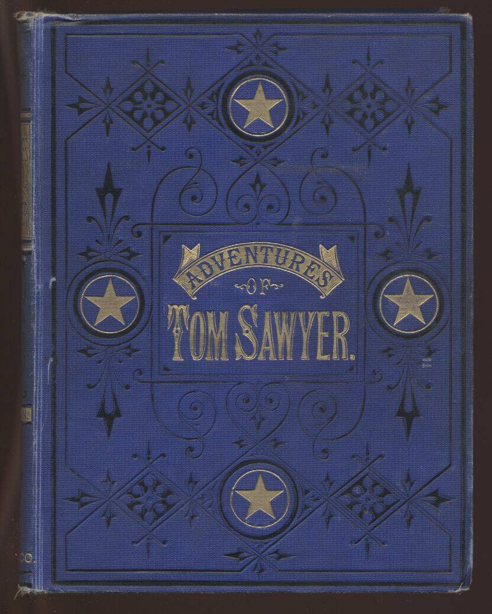
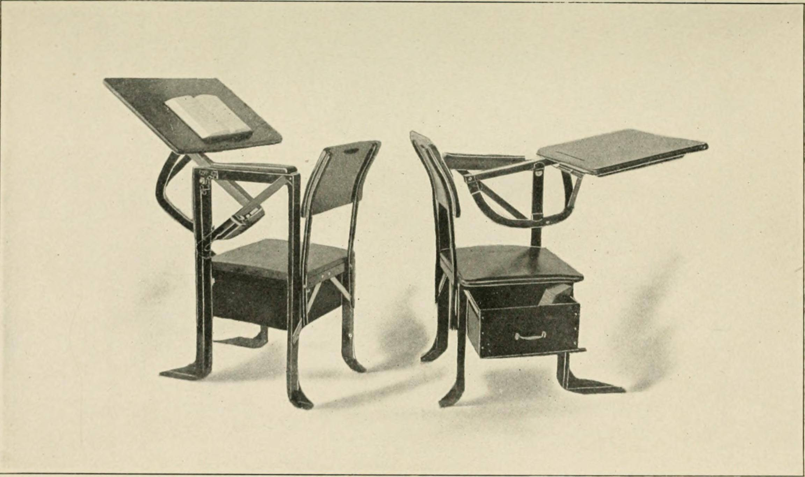
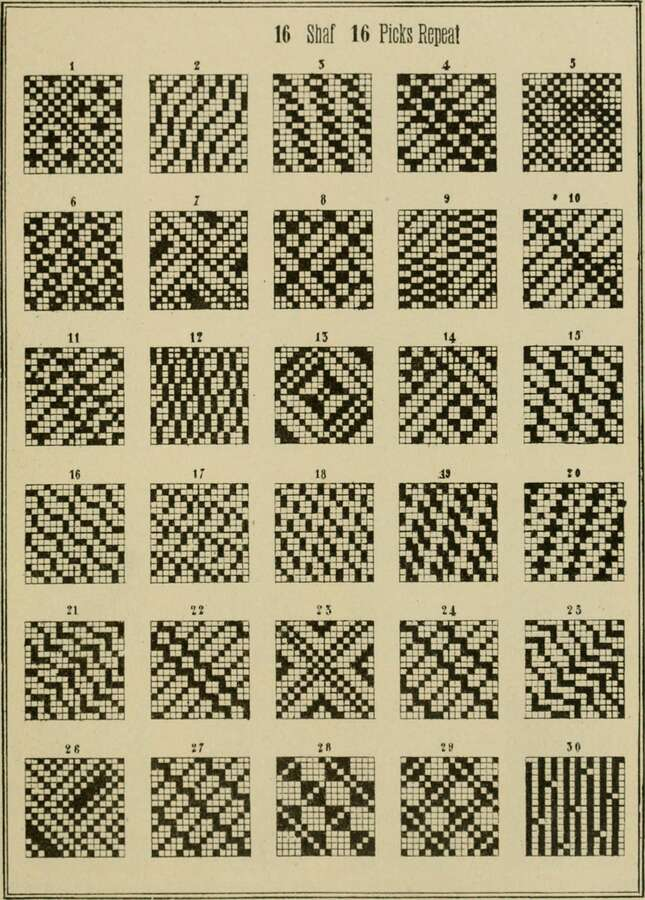

图书列表（第 2 页）
更多示例图书数据，同样包含封面、书名、作者与简要简介，用于丰富馆藏展示效果。
-
汤姆·索亚历险记（文学类）
作者：马克·吐温

以少年汤姆·索亚的顽皮冒险为主线，描绘十九世纪美国密西西比河畔小镇的童年生活，充满幽默与童真。
-
教育与训练（教育类）
作者：示例作者

围绕课堂教学与职业培训，介绍如何科学规划课程、激发学员兴趣，提高学习效果，适合作为教师与培训师参考读物。
-
学校效能研究（教育管理类）
作者：示例作者
从学校组织管理、教师发展到学生评价体系，探讨影响学校办学质量的关键因素，适合教育管理者与研究者阅读。
-
开放式设计读本（艺术/设计类）
作者：示例作者

精选多种平面与工业设计案例，讲解从构思、草图到成品的完整流程，强调以用户体验为中心的设计方法。
-
网络与服务器管理实战（科技类）
作者：示例作者
通过真实运维场景介绍 TCP/IP 协议、Linux 服务器配置与常见故障排查，适合网络工程相关专业学生参考。
-
心理学与战争（心理学类）
作者：示例作者
以二战时期军队心理学手册为线索，介绍群体心理、压力应对与领导力，对理解极端环境下的人类行为具有借鉴意义。